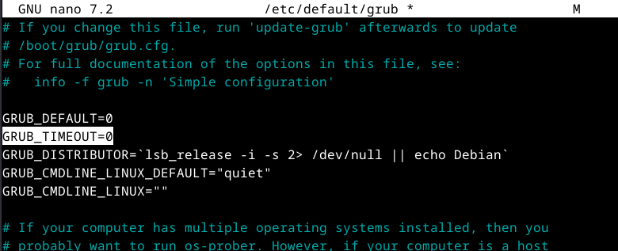
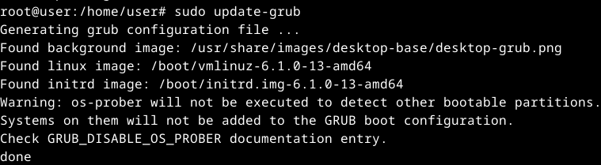
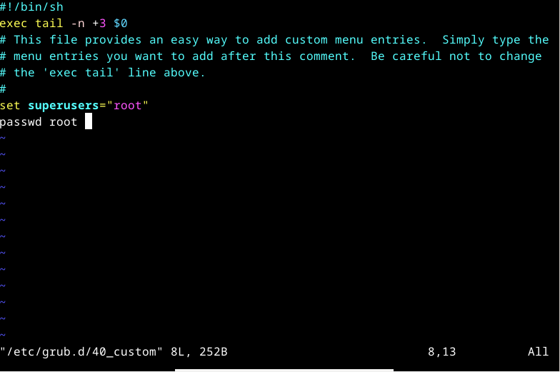
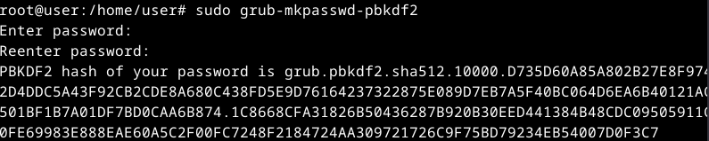
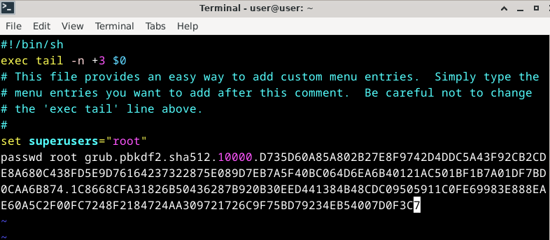
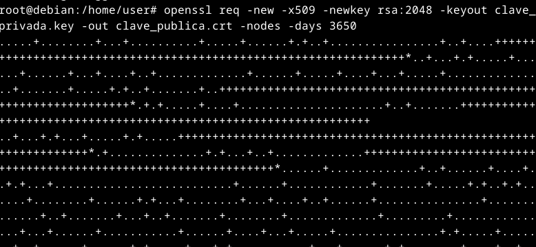
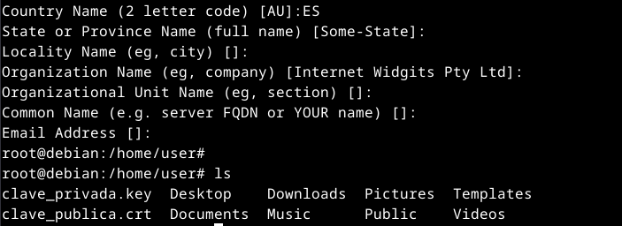
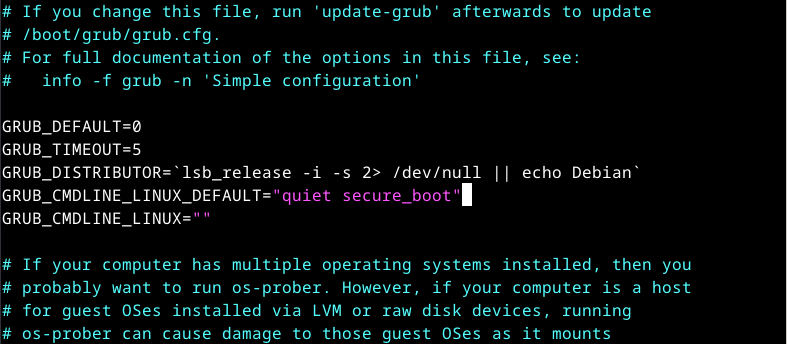
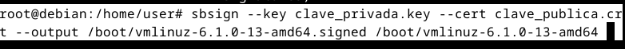

Un arranque de sistema descuidado en una máquina podría suponernos grandes problemas de seguridad si no nos preocupamos de configurarlo adecuadamente.
Un atacante avispado podría valerse de desconfiguraciones en por ejemplo el arranque GRUB para saltarse la seguridad que pueda tener nuestra máquina con respecto al inicio de sesión y vulnerar así nuestra seguridad.
Este documento ofrece una guía paso a paso ilustrada con capturas de pantalla para aplicar un proceso de bastionado o hardening de una máquina con Debian 12.
En las siguientes secciones detallaremos el proceso.
Ocultar el GRUB nos puede ayudar a securizar nuestro sistema ya que desconfiguraciones en el mismo podrían llevarnos a que un atacante vulnere la seguridad del equipo mediante la edición del parámetro Single Init de GRUB
Para ocultarlo podríamos seguir los siguientes pasos:
- Abrimos una consola y con un editor de texto el fichero de configuración etc/default/grub. El editor de texto que yo he usado es nano. Para ello realizamos los siguientes comandos:
Una vez dentro del fichero editamos el párametro "GRUB_TIMEOUT" y lo establecemos en 0:sudo nano /etc/default/grub - A continuación deberemos ejecutar el comando
update grubpara compilar el fichero etc/default/grub: - Con estos pasos el grub debería estar deshabilitado, y cuando iniciemos nuestra máquina no debería aparecernos:

Ocultar el menú GRUB puede ayudarnos a mejorar nuestra seguridad, sin embargo un usuario avanzado lo bastante avispado es capaz de causarnos problemas con tan solo llegar a la pantalla de identificación de usuario.
Para ello, añadir una contraseña al arranque del dispositivo podría ayudarnos a evitar que nadie llegue tan lejos sin autorización.
Lo podemos realizar siguiendo los siguientes pasos:
- Primero de todo procedemos a editar el fichero /etc/grub.d/40_custom y añadimos al final la línea
set superusers="root". En este caso yo voy a editarlo con Vim:Donde ponepasswd rootdebería ir nuestra contraseña, pero primero vamos a cifrarla, para ello vamos al siguiente paso - Abrimos otra terminal y ejecutamos el comando siguiente:
 Nos dará un hash, que es lo que ingresaremos en el campo anteriorsudo grub-mkpasswd-pbkdf2 - Volvemos a la edición del archivo y añadimos la contraseña mediante el hash:Guardamos el archivo.
- En este punto debemos realizar un
update grubpara volver a compilar los archivos de configuración de grub - Y probamos a iniciar la máquina de nuevo. Nos debería de pedir una contraseña:

- Es recomendable establecer que el archivo de configuración /etc/grub.d/40_custom solo pueda editarlo el usuario root, para ello añadimos los permisos convenientes con:
sudo chmod 700 /etc/grub.d/40_custom
La configuración conseguida hasta ahora es un gran avance en la seguridad de nuestro equipo, pero ahora debemos tomar algunas medidas extra para garantizarnos la máxima tranquilidad.
Vamos a proceder a realizar copias de seguridad de los archivos de configuración.
Para ello podemos seguir los siguientes pasos:
- Para copiar archivos en un sistema linux, podremos utilizar el comando
cp. Sabiendo esto vamos a proceder a copiar los archivos de la configuración del grub al directorio que será la copia de seguridad:cp /etc/default/grub /home/user/ - También necesitaremos copiar los archivos de configuración ubicados en
grub.d. Este directorio contiene archivos dentro, por lo que deberíamos añadir la flag -R al comandocp.cp -R /etc/grub.d /home/user - Con esto habremos creado copias de seguridad, pero lo conveniente sería subirlas a un repositorio online, nube, dispositivo físico o mejor, todo a la vez, por si alguno de estos falla.
Como paso adicional para el arranque, vamos a verificar la autenticidad del kernel en el arranque mediante una firma digital. Es decir configurar un Secure Boot
Para ello podemos realizar los siguientes pasos:
- Vamos a instalar las herramientas
sbsigntoolque utilizaremos para realizar la firma sobre los componentes del arranque. Lo haremos simplemente con:
Tambien necesitaremos open SSL para generar las claves, por lo que lo instalaremos si no lo tenemos:apt get install sbsigntoolapt get install openssl - Ahora vamos a generar un par de claves SSL madiante el siguiente comando:
Nos pedira una serie de datos a completar:Y podemos ver como se han generado las clavesopenssl req -new -x509 -newkey rsa:2048 -keyout clave_privada.key -out clave_publica.crt -nodes -days 3650
Nota: Realmente, este comando lo que hace es generar un certificado que hemos firmado nosotros mismos, por lo que no tiene validez. Necesitaríamos de una entidad certificadora para obtener un certificado válido.
- Editamos el fichero de configuración de grub etc/default/grub para habilitar el arranque seguro. Lo haremos editando la siguiente línea:Deberemos de realizar un
update-grubdespués de este paso. - Ahora vamos a firmar el kernel con el certificado que acabamos de generar. Para ello tan solo ejecutamos el siguiente comando:
sbsign --key clave_privada.key --cert clave_publica.crt --output /boot/vmlinuz-5.10.0-9-amd64.signed /boot/vmlinuz-5.10.0-9-amd64 - A partir de ahora cuando nuestro equipo arranque verificará la autenticidad del kernel.
Con estas medidas ahora el arranque de nuestro Debian 12 es a prueba de ciberdelicuentes. Tendrán que desesperarse un poco antes de conseguir saltarse la seguridad de nuestro equipo.